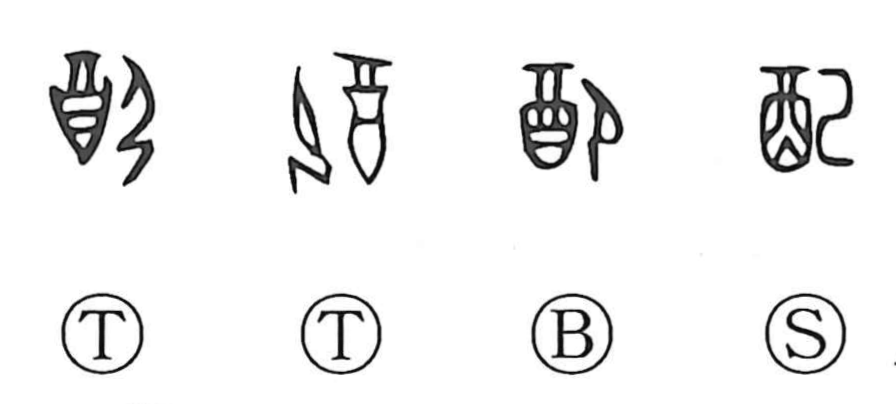

配

Kun: kubaru | On: hai
to distribute ・ to allot ・ to arrange ・ to match ・ to control
Explanation
This character combines 酉, the wine jar, with 己, whose older form depicts a person kneeling. It pictures someone kneeling before a wine vessel, the scene of pouring out and handing around drink. From this solemn act of apportionment, the sense expands to distributing or serving, then to matching a man and woman in marriage, and allotting shares. In compounds such as shihai (支配), it further conveys directing others at one’s will, even subjugating. Related graphs sketch the same ritual setting: 即 (卽) shows a person kneeling before tableware, hence taking one’s seat at the meal; 郷 (鄕) portrays people seated facing one another with dishes between them.